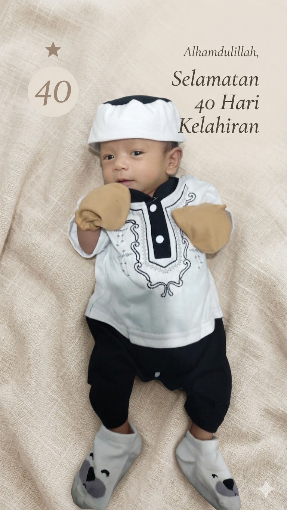

Acara Aqiqah

Segala Puji Bagi Allah SWT
"Allahumma Sholli 'Ala Sayyidina Muhammad"
Terima kasih ya Allah, atas kelancaran acara Aqiqah putra pertama kami pada hari Minggu, 10 Mei 2026 di Majlis Taklim Umm al Qura Sentul.
Putra Tercinta Dari:
Bpk. Bambang Hadi Purnomo
& Ibu Hasna Mahdavia
Cucu Dari:
Abah Imam Suyadi & Mbah Jamilah
(Orang tua dari laki-laki)
Kakek H. Edi Mahdi Jazuly & Nenek Siti Zubaedah
(Orang tua dari perempuan)
Doa untuk Ananda Hasby:
"Semoga tumbuh menjadi anak yang sholeh, cerdas, berbakti kepada orang tua, serta menjadi penyejuk hati keluarga di dunia dan akhirat."
Doa untuk Ibu Hasna:
"Semoga Allah berikan kesehatan prima, keberkahan, dan kemudahan dalam mendidik serta membimbing sang buah hati."
Doa untuk Ayah Bambang:
"Semoga senantiasa dalam lindungan Allah, dimudahkan rezekinya, dan menjadi imam yang bijaksana bagi keluarga."
Jazakumullah Khairan Katsiran kami ucapkan kepada seluruh pihak yang telah membantu kelancaran acara ini:
Seluruh Hadirin atas kehadiran dan doa tulusnya.
Para Tetangga yang telah membantu persiapan acara.
Keluarga Besar H. Edi Mahdi Jazuly: Terima kasih Kakek, Nenek, Kaka, Adik, Bibi, Ua, dan Mamang dari Teh Hasna.
Keluarga Besar Aki Jawarna: Terima kasih Mbah, Abah, Adik-adik tampan, serta Bi Acih / Enin Tarsih.